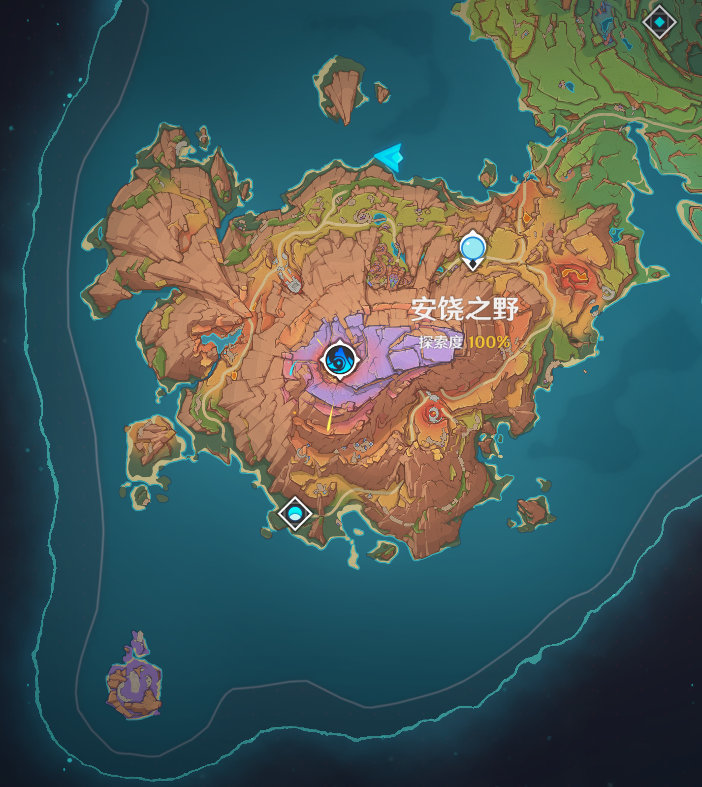
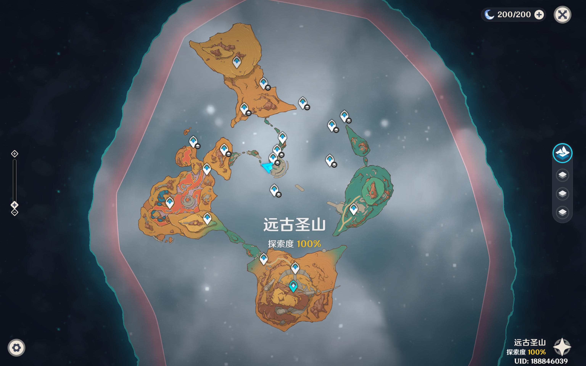

「ここのつ」当然要用「ここみ」.
合理的.
哦对了, 你怎么知道.


作用是吸引读者兴趣.
愚人节整的活 这里 实际上还是有两句话是对的.
一句是, 原 Brkhu瞎搞的地方 确实不更新了.
另一句是, 浮生多少记确实是摸了一周()
我设想的清明节: 先做点作业, 然后找几个老师聊一聊, 最后把谱序列搞懂, 并写点数学史. 有空的话炼一下ai.
我实际的清明节: 玩()(), 玩()()()().
在半个小时前, 代数tv刚刚敲完代数几何的hw7, 并感受到谱序列这一数学对象的巨大威力.
威力在哪你先别问, 感觉已经莫名其妙地做了题出来, 但是也没太明白具体他绕过去了什么.
abaabaaba
awc这代数几何怎么这么坏啊.
明天下午约了老师, 但是代数tv还不认识他
希望明天聊得一切顺利()

瑞幸的生椰拿铁不错, 橙C美式不错, 枫丹红酒美式也不错(虽然好像下架了?)
但是葡萄冷萃美式是史
茶禅一味, 剑禅一如.
茶还得是绿茶, 红茶喝的上火()
在代数tv发现滤网会把茶叶滤过去之后, 他决定探讨新的泡茶方式.
他选择在自己的瓶子里泡完茶之后, 通过他的不锈钢勺子将水转移到另一个杯子里, 以此来实现水与叶的分离.
所谓「盖碗」, 大抵如此.
但代数tv发现, 他的不锈钢勺子, 他锈了.
..
下一章大约是刻意压到10号的, 那天有一个不错的主题
先保密()
当然说不定那天我懒得写, 就把他鸽了()
哎, 时光漫过杯沿.
但是现在并不自在且悠然.
好困.
下班!
2024.4.8 22:00 于双清